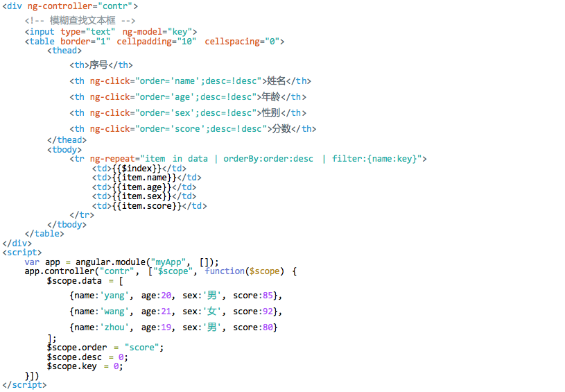

1. Angular概述
- Angular是Google提供的一套基于MVC结构的Javascript开发工具，是开源项目框架
- 核心功能：对现有的HTML编码以及指令方式进行扩展，并使扩展后的HTML编码可以通过使用元素声明的方式来构建动态内容
- 特点
- 使用双大括号{{}}语法对动态获取的数据进行绑定
- 将HTML元素代码通过分合的方式组成可常用的组件
- 支持表单和表单的验证功能
- 使逻辑代码与DOM元素相关联
- 应用场景：在构建CRUD应用时使用
- 环境搭建:
<script src="angular.min.js" type="text/javascript"></script> - ng-app属性：该属性通知Angular，页面中的哪一部分受Angular管理，通常情况下将该属性放到<html>中
e.g. <html ng-app> - 双花括号插值语法：使用两个花括号的方式包含字符串、变量等信息，受到Angular管理
e.g. {{'helloWorld'}} - 通过控制器进行变量的声明与使用
- 通过过滤器对变量进行格式化处理：Angular内置了很多过滤器，如currency、date、number、uppercase等，还可以自定义过滤器

- 双向数据绑定：使用ng-model方式绑定数据是双向变化的，即如果数据源发生改变，被绑定的元素中的内容也会同步变化
- 多项数据绑定
2. 表达式
- Angular表达式与普通JS表达式的区别
- 来源于$scope对象
- 容错能力强
- 是一个固定值
- 通过管道符进行格式化
- Angular表达式与JS表达式相互调用
- Angular表达式中调用JS表达式：在Angulra表达式中调用传统js语句，需要在控制器定义方法，由表达式调用方法即可
- JS表达式中调用Angular表达式：在js代码中调用表达式需要调用$eval()方法
3. 控制器
- 控制器概念：在Angular中，控制器的作用是管理页面的逻辑代码
- 控制器的创建
- 控制器中方法的声明与使用
- 视图元素中事件与方法的绑定
4. 模板
- 模板系统：Angular提供了一整套完整的模板系统，配合$scope对象和数据双向绑定机制，将页面纯静态元素，经过行为、属性的添加和格式的转换，最终在浏览器中显示的动态页
- 在模板系统中，可以包含Angular的指令、数据绑定、表单控件、过滤器等各功能元素
- 可以构成多个模板页面作用视图层，在主页再通过包含(include)的方式加载这些零散的模板页
- 构建模板的方法
- 直接在页面上添加元素和Angular指令，依赖控制器中构建的属性和方式绑定模板中的元素内容和控件，实现应用需求
- 通过"type"类型为"text/ng-template"的<script>元素来构建一个用于数据绑定的模板，在模板内部添加数据绑定和元素条件
- 通过添加元素的"src"属性，导入一个外部文件作为绑定数据的模板，在导入数据模板时，除添加"src"属性外，还需要使用"ng-include“指令
- 构建模板实例
<!-- 声明一个模板 --> <script type="text/ng-template" id="myTpl"> <div>姓名 : {{name}}</div> <div>年龄 : {{age}}</div> </script> - 使用模板实例
<!-- 调用模板 --> <div ng-controller="controller" ng-include src="'myTpl'"></div> <script> angular.module("myApp", []) .controller("controller", ["$scope", function($scope) { $scope.name = "yang"; $scope.age = 20; }]) </script>
5. 过滤器
- 过滤器定义：过滤器是格式化视图模板中表达式的数据和控制器中的数组或对象，不仅可以调用内部过滤器，还可以自定义过滤器
- 过滤器分类：排序过滤器，匹配过滤器，自定义过滤器
- 排序过滤器的格式
- 单个过滤器：{{表达式 | 过滤器名}} e.g. {{10.80 | currency}}
- 多个过滤器：{{表达式 | 过滤器名1 | 过滤器名2 | ... }}
- 带参数过滤器：{{表达式 | 过滤器名 : 参数1 : 参数2 : ... }}
- 排序过滤器应用 - 排序并限制记录的显示
- 匹配过滤器的格式：[匹配的字符不区分大小写]
- 自定义过滤器实例
- 过滤器应用-表头排序与模糊查找 
6. 依赖注入
- 依赖注入原理：每个Angular应用都会有一个infector注入器来处理依赖的创建，注入器的实质是一个负责查找和创建依赖的服务定位器
- 使用controllerProvider服务创建控制器
var app = angular.module("myApp", []); app.config(function($controllerProvider) { $controllerProvider.register("contr", ["$scope", function($scope) { $scope.text = ""; $scope.click_btn = function() { $scope.text = "clicked"; } }]); })- Angular中通过模块中的config函数声明需要注入的依赖对象，而声明的方式通过调用provide服务，但controller控制器不是由provide创建的，而是由controllerProvider创建的
- config函数调用controllerProvider服务的register方法，完成控制器的创建，再调用injector注入器完成各个依赖对象的注入
- 自定义服务-使用factory或service方法
var app = angular.module("myApp", []); app.config(function($provide) { //使用factory方法自定义服务 $provide.factory("$myService", ["$window", function($window) { //直接返回json，里边封装了自定义服务的方法 return { display : function(text) { $window.alert(text); } }; }]) }); //注入自定义服务 app.controller("contr", ["$scope", "$myService", function($scope, $myService) { $scope.btn_click = function(text) { $myService.display(text); } }]) - 推断式注入
- 编写控制器代码时，在注入服务过程中没有使用[]或进行标记式声明，因此注入器通过参数的名称来推断依赖服务和控制器的关系
- e.g.
var contr = function($scope, $myService) { $scope.btn_click = function(text) { $myService.display(text); } } app.controller("contr", contr);
- 标记式注入
var contr = function($scope, $myService) { $scope.btn_click = function(text) { $myService.display(text); } } app.$injector = ["$scope", "myService"]; app.controller("contr", contr); - 行内式注入
app.controller("contr", ["$scope", "$myService", function($scope, $myService) { $scope.btn_click = function(text) { $myService.display(text); } }])
7. 模板切换
- View组件的模板切换
- 模板切换中的值传递
8. 服务
- 作为angular应用，当切换路由或重载地址时，处于对内存性能的考虑，控制器中原有的数据在不需要时都会被angular清楚，在需要时重新被实例化
- 服务是angular的一个特性，它的本质是一些和控制器捆绑在一起的可替换的对象，通过这些对象提供了应用整个生命周期都存在的数据方法，当重载或刷新页面后，还能与加载前保持一致性；服务是单例的，每个应用只会实例化一次，并且在需要的时候异步加载，功能是提供数据和对象
- 服务的分类
- 内置服务：在控制器中直接调用服务，无需访问服务所涉及到的底层代码，从而确保整个应用的结构不被污染，统一调用的方法将应用功能简化或分块化
- 自定义服务：通过内置的$provide服务，调用模块中的服务注册方法
- 通过factory方法创建服务
app.factory("$myService", ["$window", function($window) { return { display : function(text) { $window.alert(text); } }; }]) - 通过service方法创建服务
app.service("$myService", function() { return new function() { this.text = "btn"; } }); - 创建常量服务
var app = angular.module("myApp", []); //使用constant定义常量可以被注入到config中 app.constant("$PERSON", { ID : 123456 }); //使用value定义常量不可以被注入config中 app.value("$PHONE", { PHONE : 1234567890 }); app.controller("contr", ["$scope", "$PERSON", "$PHONE", function($scope, $PERSON, $PHONE) { //对常量进行重置 angular.extend($PERSON, { ID : 654321 }); $scope.ID = $PERSON.ID; $scope.PHONE = $PHONE.PHONE; }]); - 服务装饰器
- 装饰器：借助内置服务$provide所特有的一项设置函数，通过它可以拦截服务在实例化时创建的一些功能，并且可以对原有功能进行优化和替换
- e.g.
var app = angular.module("myApp", []); app.factory("$myService", function() { return { name : "yang", age : 20 }; }); //通过装饰器动态修改服务中的版块 app.config(["$provide", function($provide) { $provide.decorator("$myService", function($delegate) { $delegate.title = "title"; return $delegate; }); }]); app.controller("contr", ["$scope", "$myService", function($scope, $myService) { $scope.name = $myService.name; $scope.age = $myService.age; $scope.title = $myService.title; }]);
- 服务的多例性 - 虽然服务返回的都是单例对象，但服务同样也可以返回多例对象
9. 服务端交互
- 使用$http的get方式发送请求
app.controller("contr", ["$scope", "$http", function($scope, $http) { $scope.data = ""; $scope.data2 = ""; $scope.sendGet = function() { $http.get("http://localhost/PhalApi/Public/?service=Ajax.testHttpGet") .success(function(data) { $scope.data = data; }); } }]); $scope.sendGet2 = function() { $http.get("http://localhost/PhalApi/Public/?service=Ajax.testHttpGet2&name=yang") .success(function(data) { $scope.data2 = data; }); } - 使用$http的post方式发送请求
var myApp = angular.module('app',[]); myApp.config(function($httpProvider){ $httpProvider.defaults.transformRequest = function(obj){ var str = []; for(var p in obj) { str.push(encodeURIComponent(p) + "=" + encodeURIComponent(obj[p])); } return str.join("&"); } $httpProvider.defaults.headers.post = { 'Content-Type': 'application/x-www-form-urlencoded' } }); app.controller("contr", ["$scope", "$http", function($scope, $http) { $scope.data = ""; $scope.sendGet = function() { $http.post("http://localhost/PhalApi/Public/?service=Ajax.testHttpGet",{name:"test"}) .success(function(data) { $scope.data = data; }); } }]); - 使用$http对象的方法发送请求
var app = angular.module("myApp", []); app.controller("contr", ["$scope", "$http", function($scope, $http) { $scope.data = ""; $scope.sendGet = function() { $http({ method : "get", url : "http://localhost/PhalApi/Public/?service=Ajax.testHttpGet2", params : {name : "yang"} }).success(function(data) { $scope.data = data; }) } }])
10. 缓存
- 缓存概念：缓存的核心组成是一个个键值存储集合，一个键对应的一块缓存内容，当键存在且有效时可以返回对应的缓存内容
- 使用$cacheFactory服务创建缓存对象
<div ng-controller="contr"> 输入缓存 : <input type="text" ng-model="val"> 输出缓存 : <span>{{display}}</span> <button ng-click="putCache()">保存缓存</button> <button ng-click="getCache()">取出缓存</button> <button ng-click="removeCache()">清除缓存</button> </div> <script type="text/javascript"> var app = angular.module("myApp", []); //创建缓存服务 app.service("$cache", function($cacheFactory) { //返回缓存对象 return $cacheFactory(""); }); //注入缓存服务 app.controller("contr", ["$scope", "$cache", function($scope, $cache) { $scope.val = ""; $scope.display = ""; var cache = $cache; //存放缓存 $scope.putCache = function() { return cache.put("test", $scope.val); } //取出缓存 $scope.getCache = function() { $scope.display = cache.get("test"); } //移除缓存 $scope.removeCache = function() { cache.remove("test"); } }]); </script> - 在http请求中使用缓存
var app = angular.module("myApp", []); app.controller("contr", ["$scope", "$http", "$cacheFactory", function($scope, $http, $cacheFactory) { var url = "http://localhost/PhalApi/Public/?service=Ajax.testHttpGet"; var cacheObj = $cacheFactory.get("$http"); $scope.data = "从接口获取的数据..."; $scope.cacheData = "从缓存中获取的值..."; $http({ url : url, method : "get", cache : true }) .success(function(data) { $scope.data = data; $scope.cacheData = cacheObj.get(url)[1]; }); }]); - 在http请求中使用自定义缓存
var app = angular.module("myApp", []); app.service("$cache", function($cacheFactory) { return $cacheFactory(""); }) app.controller("contr", ["$scope", "$http", "$cache", function($scope, $http, $cache) { var cache = $cache; $scope.data = ""; $scope.cacheData = ""; $http({ method : "get", url : "http://localhost/PhalApi/Public/?service=Ajax.testHttpGet", cache : true }).success(function(data) { $scope.data = data; cache.put("cacheData", data); }); $scope.refresh = function() { $scope.cacheData = cache.get("cacheData"); } }])
11. 指令
- 定义指令：通过调用directive(name, fn)方法实现
e.g.<div> 通过标签使用指令 : <ts-hello></ts-hello> 通过属性使用指令 : <div ts-hello></div> 通过类使用指令 : <div class="ts-hello"></div> 通过默认方式使用指令 : <div data-ts-hello></div> </div> <script type="text/javascript"> var app = angular.module("myApp", []); app.directive("tsHello", function() { return { //E:通过元素使用;A:通过属性使用;C:通过类使用;M:通过注释使用 restrict : "EAC", //使用该指令生成的模板代码 template : "<span style='color:red'>ts-Hello echo msg</span>" } }) </script> - 指令属性
- restrict：设置指令的使用方法
- template：设置指令生成的模板代码
- replace：设置模板是否替换指令代码，默认为false
- templateUrl：设置模板的url路径，可以为文件、script定义的模板，以及模板缓存(通过run方法在框架加载后调用$templateCache的put方法设置模板缓存)
- transclude : 默认为false，当设置为true时，在template中使用ng-transclude指令可以将被指令元素中原有内容显示出来
transclude : true
template : "<span style='color:red'>ts-Hello echo msg</span><div ng-transclude></div>", - link：link:function(scope, iEle, iAttrs){...}; //该属性值是一个函数，可以操控DOM对象，包括绑定各类事件，定义事件触发时执行的内容;scope参数代表指令所在作用域，功能与注入控制器的scope相同、iEle参数代表指令中的元素，可以通过angular内置的jqLite框架进行操作、iAttrs参数表示指令元素的属性集合，通过此参数可以获取元素中的各类属性
12. 路由
- Angular中的路由功能被封装到名为"$location"的服务中，借助服务API，实现刷新或跳转页面的功能
- $location中的只读方法

- $location中的读写方法
- $location.replace()方法可以禁用浏览器后退，用于防止表单重复提交
- 捕获$locationChangeStart事件：当url开始改变时触发该事件
var app = angular.module("myApp", []); app.controller("contr", ["$rootScope", "$scope", "$location", function($rootScope, $scope, $location) { $rootScope.$on("$locationChangeStart", function(evt, current, previous) { $scope.cur = current; $scope.prev = previous; }) }]) - 捕获$locationChangeSuccess事件：当url改变成功后出发该事件
- 路由对象双向数据绑定
<div ng-controller="contr"> <input type="text" ng-model="locationPath"> <span>{{locationPath}}</span> </div> <script type="application/javascript"> var app = angular.module("myApp", []); app.controller("contr", ["$scope", "$location", function($scope, $location) { $scope.$watch("locationPath", function(path) { $location.path(path); }) $scope.$watch("$location.path()", function(path) { $scope.locationPath = path; }) }]) </script>
13. 其他
- 解决setTimeout改变属性无效
- 问题：setTimeout使属性发生改变，但页面则不会被重新渲染，所以导致无效
setTimeout(function() { $scope.data = "change..."; }, 3000) - 解决方案1：使用$apply重新渲染页面
setTimeout(function() { $scope.$apply(function() { $scope.data = "change..."; }) }, 3000) - 解决方案2：使用angular提供的$timeout方法替代原生js的setTimeout(使用$timeout方法时必须在控制器中注入$timeout服务)
$timeout(function() { $scope.data = "change..." }, 3000)
- 问题：setTimeout使属性发生改变，但页面则不会被重新渲染，所以导致无效
- 在ng-repeat中使用过滤器过滤内容，不可以通过$index定位元素，可以将整个元素传入用于过滤
<li ng-repeat="item in data | myFilter"> {{item.username}} {{item.age}} <button ng-click="delete(item)">delete</button> </li> - 使用stopPropagation()方法停止事件冒泡
$scope.click = functin(name, $event) { $event.stopPropagation(); } - $watch检测函数以及检测的释放
- $watch函数格式：$watch(watchExpression, listener, objectEquality) //watchException为字符串型,表示需要检测的表达式;listener参数为函数,当检测的表达式发生变化时自动调用该函数;当判断函数两个参数newValue和oldValue的值是否相等时,会以递归的形式调用angular.equals()方法去修改数据,并一直检测到没有修改为止
- 当再一次调用$watch函数时,该检测将会被释放
- e.g.
$scope.num = 0; $scope.stopWatch = function() { contentWatch(); } var contentWatch = $scope.watch('content', function(newVal, oldVal) { if (newVal == oldVal) return; $scope.num++; });
- ng-if中的代码会建立一个对应的子域，如果想要在子域中双向绑定控制器中的变量需要使用$parent标识
e.g.<div ng-if="flag"> <input type="text" name="content" ng-model="$parent.content"> </div>